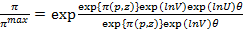

Profit Efficiency of Smallholder Spinach Producers under Irrigated Agriculture In Niger State, Nigeria
Abstract
The study examined the profit efficiency of smallholder spinach producers under irrigated agriculture in Niger State by collecting data from 240 respondents. The data were analyzed using descriptive statistics and stochastic profit frontier function. The results indicated the most farmers operated farm size of less than 1ha. The estimates of the stochastic profit frontier function showed that farm size increased profit while cost of fertilizer, agrochemical and farm tools increased profit. The profit inefficiency model shows that education, farming experience, extension contact and sex of the respondents are all negative coefficient, and this implies that as these variables increases the profit inefficiency of the spinach farmers decreases. Age had positive coefficient which means as the farmers’ age increases the profit inefficiency of the farmers also increases, quite contrary to expectation. The most important problems encountered are lack of agrochemicals and lack of funds.
Author:
Job Nda Nmadu
Dept. of Agric. Econ. and Ext. Technology
Federal University of Technology
Minna, Nigeria
Salihu Abu Garba
Department of Arts and Social Sciences
Federal Government College
Minna, Nigeria
Paper Transcript of Paper Titled :
Profit Efficiency of Smallholder Spinach Producers under Irrigated Agriculture In Niger State, Nigeria
Profit Efficiency of Smallholder Spinach Producers under Irrigated Agriculture In Niger State, Nigeria
Job Nda Nmadu
Dept. of Agric. Econ. and Ext. Technology,
Federal University of Technology
Minna, Nigeria
Salihu Abu Garba
Department of Arts and Social Sciences,
Federal Government College
Minna, Nigeria
Abstract— The study examined the profit efficiency of smallholder spinach producers under irrigated agriculture in Niger State by collecting data from 240 respondents. The data were analyzed using descriptive statistics and stochastic profit frontier function. The results indicated the most farmers operated farm size of less than 1ha. The estimates of the stochastic profit frontier function showed that farm size increased profit while cost of fertilizer, agrochemical and farm tools increased profit. The profit inefficiency model shows that education, farming experience, extension contact and sex of the respondents are all negative coefficient, and this implies that as these variables increases the profit inefficiency of the spinach farmers decreases. Age had positive coefficient which means as the farmers’ age increases the profit inefficiency of the farmers also increases, quite contrary to expectation. The most important problems encountered are lack of agrochemicals and lack of funds.
Keywords- Profit efficiency; smallholder spinach producers; irrigation; Agricultural Development Projects.
Introduction
Vegetables are nourishing food because they contain a little of all the substances man needs: protein, mineral salts, Sugars, vitamins, Aromatics, colouring agencies, iron and essential oils that increase man’s resistance to diseases. Leafy vegetables no doubt offer population with limited access to meat and fish rich sources of protein and some vital micro nutrients needed for healthy living especially in Niger State, [1]. Consequently, leaf vegetable is now seen worldwide as an ally in the fight against hidden hunger, [2]. However, most leaf vegetables grown in Nigeria are annual crops which end their life cycle at the onset of the dry season. This often results in the scarcity of the commodity during the dry season with the resultant decrease in protein and certain micro nutrients content of the general diet especially the poor who are the majority. Nigeria, a tropical country with most of her land areas lying in low or middle elevation without frost problem, possesses a favourable climatic condition for all year round leaf vegetables production. The observed trend among the smallholder farmers is that, majority of them do rest during the dry season because they are unable to carry out full scale farming activities [3]. Hence the dry season is a period characterized by low income especially among this population accompanied by hunger and malnutrition which sometime lead to the death of children since food prices are too high [4]. Furthermore, Adeboye and Opabode [5], affirmed that leafy vegetables are sold at high prices during the dry season in most parts of the country. The implication of this is that leaf vegetables especially Spinach production can provide all year round income; generate employment opportunities for the farmer with little capital investment. In general, leaf vegetable production can play a vital role in all year round supply of balanced diet, conservation of natural resources and improved farm income [6]. Having been made aware of the enormous benefits inherent in the dry season leaf vegetable production coupled with the introduction of Fadama farming programmes (a world bank grant sponsored agricultural development programme) fashioned to help the production of vegetable and maize during the off season.
Irrigation development in Niger State indicated that Niger state has a total irrigation land area of 682,331 ha, of which only 105,556 ha is put to use and it is estimated that about 120,000 ha can be developed through harnessing of sub-surface water using wash bores or tube wells while the balance can be developed using rivers diversion modules, flood control structures and surface pumping [1]. The extensive flood plains at the southern boundaries of the state, availability of large water bodies (river Niger, Kaduna, Gbakogi, Gurara and Chanchaga), dams/reservoirs (Kainji, Shiroro and Jebba), numerous streams as well as the distinct six months of dry weather offer great opportunity for dry season cultivation of rice, sugarcane, maize, pulses and assorted vegetables. Only about 25% of the potential irrigation land in the state has been developed. These include small irrigation structures established by the ADP such as wash bores, tube wells, and diversion modules. Niger State Government provided medium scale irrigation schemes (800ha) located at Rabba, Chanchaga, Zara, Lioji, Edo, Lapai, Agaie, and Guzan while the Federal Government of Nigeria provided 22,000ha located at Tungan Kawo, Swashi, Auna and Kagara [1]. More farmers are now participating in dry season leaf vegetable production in Niger State [7]. It was against this background that this study was conceived to ascertain Farm-specific factors affecting the level of profit efficiency of the smallholder Amaranth farmers under irrigation agriculture.
methods
The study was conducted in Niger State which lies between latitudes 9°35ˈ-9°40ˈN and longitudes 6°30ˈ-6°35ˈE with a population of 4m [8], 80% of which live in the rural areas and subsistence agriculture accounts for 70% of the total employment [1]. It is estimated 400,000 farming families exist in the State holding an average 3.5ha farm plots. According to Aminu [7], the State is the largest in the federation in terms of land mass, covering 9.3% of total land area of the country i.e. about 86,000sqkm or 8.6 million hectares and 80% of which is arable.
The study was conducted in the predominantly vegetable producing areas of Niger State. The study adopted multi-stage random sampling techniques. The State consists of three Agricultural Development Project (ADP) zones, namely, Zone 1, Zone 2 and Zone 3. Two local government areas were selected randomly from each of the Zones from where two communities involved in intensive vegetable production were randomly selected. Finally, 20 spinach farmers were also randomly selected from each of the selected communities giving a total of 240 respondents for the study.
Data for this study were sourced from primary sources. The primary data were elicited from respondents with the used of structured questionnaire complimented with interview schedules. Data were collected on the socio-economic characteristics of the respondents such as: age, sex, family size, and level of education, input-output data such as farm size, labour requirement by operation, and depreciation on capital inputs such as cutlasses, hoes, irrigation machine, knapsack sprayer and quantity of spinach produced. Relevant information were elicited from the respondents on other production inputs such as fertilizer, agrochemicals, improved seeds, hectares devoted to spinach production, input-output prices.
The analytical techniques used in this study include stochastic frontier profit in line with Ojo et al. [9] and Oguniyi [10], who adopted Battesse and Coelli [11] model to postulate a profit function which is assumed to behave in a manner consistent with the stochastic frontier concept. The profit frontier model begins by considering a stochastic profit function with a multiplicative disturbance term of the form in equation (1).
π = f(pi, Zikβi)e(Ei) ------------------------------------------(1)
Where; π= normalized profit defined as gross revenue less variable cost divided by price of output, Pi = normalized price of variable inputs by the farm divided by output price, Zi = level of kth fixed factor on the farm, βi = vectors of parameters, ei = error term used, Ei = stochastic disturbance term consisting of two independent elements v and u.
Where, Ei = Vi + Ui ---------------------------------------------(2)
Vi’ is NID(0, δ2) while Ui is the one-sided disturbance form used to represent profit inefficiency and it is independent of Vi.
The stochastic profit function model can be used to analyse cross-sectional data. The model simultaneously estimates the individual profit efficiency of the respondents as well as the determinants of the profit efficiency. The frontier of the farm is given by combining equation 1 and 2 as presented in equation (3).
π = f (Pi,Zik,β) e(U+V) --------------------------------(3)
Profit efficiency of an individual farmer is defined as the ratio of predicted actual profit to the predicted maximum profit for a best practical vegetable farmer and this represented in equation (4).
Profit efficiency (Eπ) =------------(4)
Where π = predicted actual profit πmax =predicted maximum profit
Given the density function of Ui and Vi, the frontier profit function can be estimated by the maximum likelihood technique. E(π) takes the value between o and 1. If Ui = 0 i.e. lying on the frontier, the farmer has potential maximum profit given the price it faces and level of fixed factors while if Ui > 0, the farm is inefficient and operates on lower profit as a result of inefficiency. Following, Coelli [12] and Ojo et.al [9], the stochastic frontier function with behavioural inefficiency components was used to estimate all parameters together in one step maximum likelihood estimation procedure. The explicit Cobb-Douglass functional form the Amaranth producers in the study area was therefore specified explicitly as presented in equation (5).
Lnπ = lnβo+lnβ1Z1i+lnβ2iP1i+lnβ3iP2i+lnβ4iP3i+lnβ5iP4i+ lnβ6iP5i+lnβ7iZ2i+(V-U)-----------(5)
Where π = normalized profit function computed as the total revenue less variable cost per output price, Zi =farm size (ha), P1= Normalized price of labour (price (N) per man-day of labour), P2= Normalised price of fertilizer (price (N) per kg of fertilizer), P3= Normalized price of seed (price (N) per kg of seed), P4=Normalized price of agrochemical [price (N) per litre of agro-chemical], P5=Normalized price of irrigation water (cost of irrigation water (N)/litre), Z2=Annual depreciation on farm tools, βO=Intercept/constant, β1-β7=Parameters to be estimated, Ui=Non-negative (zero mean and constant variance) random variable called profit inefficiency effect associated with the profit efficiency of the ith farmers. Uij’s are the profit inefficiency effects which are assumed to be independent of Vij’s such that Uijs are the non-negative truncation (at zero) of the normal distribution with mean Ui and variance (δ2V). Where Ui is defined as shown in equation (6).
Ui = δ0+δ1Gi+δ2G2i+δ3G3i+δ4G4i+δ5G5i+δ6G6i+δ7G7i+δ8G8i---6
Where, Ui = profit inefficiency of the ith farmer, G1i = Age of the ith farmer (in years), G2i = Level of education of the ith farmer (number of years spent in school), G3i = Farming experience of the ith farmer (in years), G4i = household size of the ith farmer (number), G5i = Extension contact (number of meeting during production process), G6i = Sex (1 for male, 0 for female), G7i = Credit status of the ith farmer (1 for access to credit, 0 otherwise), G8i = Status of Membership of the co-operative society of the ith farmer (dummy variable, whereby, 1 for membership, 0 for otherwise). δ1-δ8=unknown parameters to be estimated. The parameters of the stochastic frontier profit function were estimated with FRONTIER version 4.1c [12].
results and discussion
The results of the analysis and the discussion of the results are presented in this section.
Socio-economic and demographic factors
The socio-economic and demographic characteristics of the respondents are presented on Table I The results on show that majority (93.7%) were males with the mean age of the respondents was 40 years and majority of the farmers (40%) were between 41-50 years indicating that relatively younger persons are involved in production system and therefore there is likelihood increasing productivity which corroborates earlier findings [13] - [14]. Apart from increase in labour supply, respondents within the productive age bracket are likely to adopt innovation more than the aged farmers [15]. The cultural setting of the area that allows for gender-stereotype access to production inputs especially land had been indicated [16] - [17]. It has also observed that female gender at individual, household and wider community and national contexts are affected by financial, economic, political and legal obstacles while at the same time, strengthens the male farmers access to inputs [18] - [19]. The average household size was about 10 persons. While high household size could be an incentive for increased land cultivation (especially where all members are adult and participate in farming activities), this result shows a contrary situation among spinach farmers in the study area where lands cultivated were small [20] - [21]. The results also show that spinach producers under irrigated agriculture in Niger State are generally smallholder farmers probably because of the limited availability of irrigable land relative to total cultivable land and constraints imposed by land fragmentation [22] - [23]. The result also corroborates earlier findings [20]. They affirmed that the small farm size could be because these farmers also engage in other activities such as rain fed agriculture, fishing, marketing etc. which equally demand for their limited labour.
Estimates of the Stochastic Profit Frontier Function
The maximum likelihood estimates of the parameters of the stochastic profit frontier model are presented on Table II. The diagnostic statistics showed that the estimated sigma-squared (δ2) is significant at the 5% level. This indicated a good fit and the correctness of the specified distributional assumptions of the composite error term. The observed significance of δ2 conformed to earlier findings [9], [22], [24] – [25]. They concluded that conventional production function is not an adequate representation of the data. In addition the estimated gamma (ϒ) of 0.989 which is the ratio of the variance of farm specific profit efficiency to the total variance of the profit was significant at the 1% level of significance as indicted in Table II, indicating that 98.9% of the variation in actual profit from maximum profit (profit frontier) among spinach farms was due mainly to differences in farmers’ practices, one sided error and
- Socioeconomic characteristic of the respondents
Variables |
Freq. |
% |
Age |
|
|
20- 30 years |
39 |
16.3 |
31-40 years |
82 |
34.2 |
41- 50 years |
96 |
40.0 |
51-60 years |
21 |
8.7 |
60 and above |
02 |
0.8 |
Total |
240 |
100.0 |
Mean age |
40.0 |
|
Gender (Sex) |
|
|
Male |
225 |
93.7 |
Female |
15 |
6.3 |
Total |
240 |
100.0 |
Marital Status |
|
|
Single |
18 |
7.6 |
Married |
218 |
90.8 |
Separated |
1 |
0.4 |
Divorced |
1 |
0.4 |
Widowed |
2 |
0.8 |
Total |
240 |
100.0 |
Household Size |
|
|
1-5 |
44 |
18.3 |
5-10 |
123 |
51.3 |
10-15 |
46 |
19.2 |
15-20 |
27 |
10.4 |
20-30 |
02 |
0.8 |
Total |
240 |
100.0 |
Farm Size (ha) |
|
|
0.1-0.4 |
82 |
34.3 |
0.4-0.8 |
43 |
17.3 |
0.8-1.2 |
63 |
26.4 |
|
45 |
18.9 |
1.6-2.0 |
07 |
3.1 |
Total |
240 |
100.0 |
Level of education |
|
|
Non-formal Education |
61 |
25.4 |
Primary Education |
53 |
22.1 |
Secondary Education |
50 |
20.8 |
Tertiary Education |
12 |
5.0 |
Adult Education |
18 |
7.5 |
Quranic Education |
46 |
19.2 |
Total |
240 |
100.0 |
Years spent in School |
|
|
1-6 |
77 |
32.2 |
6-12 |
93 |
38.9 |
12-18 |
64 |
26.8 |
18-24 |
06 |
2.1 |
Total |
240 |
100.0 |
Farming experience (years) |
|
|
5-10 |
25 |
10.5 |
10-15 |
33 |
13.8 |
15-20 |
68 |
28.1 |
20-25 |
74 |
30.9 |
25 and above |
40 |
16.7 |
Total |
240 |
100.0 |
therefore 1.1% was due to stochastic disturbance with two sided error, supported by high t-value [26]. Out of the seven variables modeled, only the coefficient of Farm size was positive and significant. This implies that if farm size is increased by 1%, holding other variables constant, farm profit will increase by 0.744%, i.e. decreasing returns to scale, while normalized costs of fertilizer, agrochemical and farm tools have negative coefficients and are significant. This implies that a 1.0% increase in fertilizer, agrochemical and farm tools would lead to decrease in profit efficiency by 0.169, 0.222 and
- Estimates of the Frontier Function
Production Factors |
Coefficient |
Constant |
12.410*** (16.907) |
Farm Size (ha) (Z1) |
0.744*** (5.470) |
Cost (N) per man day of labour (P1) |
0.17 (16.907) |
Cost (N)of Fertilizer (Kg) (P2) |
-0.169*** (-3.872) |
Cost (N) of Seeds (Kg) (P3) |
0.142 (1.308) |
Cost (N) of Agrochemical (litres) (P5) |
-0.222* (-1.871) |
Cost (N) of Irrigation Water (Litres)(P5) |
0.059 (1.017) |
Annual Depreciation on Farm Tools (Kg)(Z2) |
-0.195*** (-2.638) |
Profit inefficiency factors |
|
Constant |
-14.824 (-1.488) |
Age (year)(G1) |
0.173** (2.003) |
Education level (years)(G2) |
-0.190* (-1.883) |
Farming experience (years)(G3) |
-0.361** (-2.222) |
Household size (G4) |
0.065 (1.039) |
Extension Contact(G5) |
-0.122** (-1.994) |
Sex (G6) |
-3.553** (-2.473) |
Access to credit (G7) |
3.769 (1.718) |
Membership of co-operative society (G8) |
3.769 (1.718) |
Diagnosis Statistics |
|
Sigma – Square (δ2) |
22.715** (2.135) |
Gamma (ϒ) |
0.989*** (174.87) |
Log likelihood function |
-375.344 |
LR Test |
60.67 |
NB: Values in parenthesis are t-ratios, ***P<0.01, **P<0.05, *P<0.10
0.195 respectively i.e. decreasing return to scale. The normalized cost of fertilizer is negative and significant at 1% level of significance. This shows that an increase in the amount spent on this variable led to a decrease in the profit efficiency of the spinach farmers. This suggests an over use of the fertilizer to the point of diminishing returns. Agrochemical was also found to be negative and significant at 10% level. This indicates that as the cost of agrochemical increases, profit of the farmer also decreases. It may perhaps be due to wrong use leading to too much application of agrochemical resulting in extra cost sustained by the spinach farmers. Farm tools had a significant but negative relationship with the profit of the spinach farmers. The Table also shows that normalized cost of labour, planting seed and irrigation water were not significant.
Determinants of Profit Inefficiency
The parameter estimates for the determinants of profit inefficiency are also presented on Table II. The results of the analysis of inefficiency models shows that education had a negative coefficient and significant at 10%, farming experience, extension contact and sex of respondents also had a negative coefficients respectively and are all significant at 5% level respectively. This means that as these variables increases, the profit inefficiency of the Spinach farmer decreases. The results also showed that the spinach farmers with high level of education coupled with better farming experience exhibited significantly less loss of profit than those with little education and little experience which are inconsistent with earlier findings [25] & [27]. Age had a positive coefficient and significant at 5% significant level. This implies that as the farmers’ age increases the profit inefficiency of the farmer also increases, quite contrary to theoretical expectations. It was expected that farmers will gain from experience and have opportunity to correct observed errors of the past. Since this was not the case, there seems to be memory lost or farmers are adamant and inflexible in their plans.
Efficiency indices of the respondents
The distribution of profit efficiency of small holder spinach farmers is presented in Table 3. The profit efficiency ranged between 0.0093 and 0.9011 for the worst and best-practice farmer respectively and with mean profit efficiency in the study area of 0.4450. This implies that the average spinach farmer in the study area could increase profit by 55.5% by improving his/her technical and allocative efficiencies. This implies that there exist prospects for the farmers to increase their farm incomes thus reducing poverty. The wide variation in profit efficiency is not surprising and was similar to the results from other studies. For example Adeleke, et al. (25) reported a mean profit efficiency level of 0.422 (0.05- 0.99) for small holders farmers in Atiba Local Government Area of Oyo State; Ohajianya (27) reported a mean profit efficiency of 0.32 for cocoyam producers in Nigeria; Rahman (24) reported a mean profit efficiency level of 0.77 ranges for Bangladesh rice farmer;. Oguniyi (10) reported a mean profit efficiency level of 0.12 (0.000187-0.429) for cocoyam producers in Osun State. The low level of profit efficiency observed was as a result of marked mal-allocation of existing resources. In other words, the farmers did not optimally allocate existing resources to necessitate the attainment frontier profits. Even the best-practice farmer requires a cost saving to operate optimally.
Constraints faced by spinach producers
The distributions of the constraints encountered are presented on Table IV. Results indicated that lack of agrochemical is the most important constraint faced by the spinach farmers interviewed. The lack may be associated with high cost or shortage of supply. So it is hardly surprising that lack of funds is one of the major production constraints encountered by the respondents. This is probably due to cash trapped nature of small scale farmers in rural communities especially in developing countries like Nigeria, since cash is necessary for the purchase of inputs and other equipment which are normally associated with improved technology [28]. High cost of inputs is the next important constraint but bears close relationship with the earlier ones and shortage in supply of the inputs or the long marketing chain before the inputs gets to the farmers [28]. High costs of labour is also a major constraint, this could be due to shortage accentuated by migration from farms to towns and cities in search of more comfortable jobs or due to high demand at certain critical stages of farm operations. Lack of farmers’ co-operatives or farmers associations was also one of the problems encountered. Effective farmers’ association has been very useful in microcredit management and is a source of coercion and persuasion for farmers to adopt innovations and improved technologies in a band wagon manner [e.g. 28]. Some of the respondents indicated that the improved technology was too complex for adoption, this shows that the extension workers
Efficiency Indices of spinach farmers
Efficiency Index |
Freq. |
% |
0.01 – 0.10 |
37 |
15.4 |
0.11 – 0.20 |
11 |
4.6 |
0.21 – 0.30 |
20 |
8.3 |
0.31 – 0.40 |
19 |
7.9 |
0.41 – 0.50 |
36 |
15 |
0.51 – 0.60 |
44 |
18.3 |
0.61 – 0.70 |
36 |
15 |
0.71 – 0.80 |
31 |
12.9 |
0.81 – 0.90 |
4 |
1.7 |
0.91 – 1.00 |
2 |
0.8 |
Total |
240 |
100 |
Mean |
0.4450 |
|
Maximum Value |
0.9011 |
|
Minimum Value |
0.0093 |
|
- Problems encountered by the respondents
Production Problems |
Freq. |
% |
Lack of Agrochemical |
164 |
68.33 |
Lack of Funds |
150 |
62.50 |
High cost of Inputs |
129 |
53.75 |
Pests and Diseases attack |
110 |
45.83 |
High cost of labour |
145 |
60.41 |
Lack of Market information |
46 |
19.16 |
Drought/inadequate water for irrigation |
107 |
44.58 |
Inadequate Extension contact |
30 |
12.50 |
No farmers’ co-operatives/Associations |
140 |
58.3 |
Technology too Complex |
134 |
56.25 |
are not properly trained to disseminate innovative messages to the farmers; sometimes extension staff are poorly trained and know little more than the farmers.
CONCLUSION
This study investigated the determinants of spinach production and factors affecting profit efficiency of the respondents. Spinach production was found to be profitable enterprise in the study area and farm size was significant at explaining the profit efficiency of the farmers. The results show that the farmers are generally profit efficient but can improve on it by up to 55.5%. The major problems encountered by the farmers in spinach production include lack of agrochemicals, lack of funds, high cost of labour and improve technology being too complex for them. In view of these, fertilizer should be made available to the farmers by both private and public sectors at affordable rate. There may be need to sustain the subsidy policy within the current e-wallet system and ensure proper monitoring to ensure that the input gets to the intended beneficiaries. In addition, Extension agents should be adequately trained on improved practices; this will go a long way to facilitate the training of farmers on utilization of these inputs. Also, there is the need to encourage practicing and prospective entrants into spinach business by making production inputs available and opening up government land to practicing farmers. This will boost production, curb wide spread of poverty, create employment and improve the standard of living of the citizenry. Finally, credit policy should be expanded to enable farmers have access to credits. Government and private stakeholders should invest more on operational credit institutions with thorough supervision and monitoring to ensure that such credits gets to the target farmers.
References
Niger State Ministry of Agriculture and Natural Resources (2010). An Outline of Niger State Agricultural Regeneration Programme. pp1-15.
Spore, (2005). Leafy Vegetables: A treasure to be plucked. CTA. 116. pp3.
Ajewole, O.C. & Folayan, J.A. (2008). Stochastic Frontier Analysis of Technical Efficiency in Dry season Leaf Vegetable Production among smallholders in Ekiti State, Nigeria. Agricultural Journal 3(4): 252-257.
Akinyele, I.O. (1998). Participatory Development of Community Based Technology Transfer centres and Establishment of Farmers Groups in Support of Food Production in Oyo State. The World Bank/WBI’s CBNRM Initiative. www.srdis.ciesin.columbia.edu .
Adeboye, O.C. & Opabode, J.T. (2004). Status of conservation of indigenous leaf Vegetables and Fruits of Africa. African Journal 0f Biotechnology. 3(12):700-705.
Sahu, P.K. (2004). Statistical Analysis of Vegetable production in India, China and the World. Journal of Vegetable Crop production, 10(1):3-9.
Aminu, Y. (2010). Agricultural Development and Potentials of Niger State: A Heaven of Investment Opportunities. Paper Presented at the Investors Forum organized by the Niger State Ministry of Agriculture, Minna.
Wikipedia, (2008). “Geography of Niger State, Nigeria”. Canback Global Income Distribution Database. (Online through Wikipedia). Retrieved June 10, 2008 from http://en.wikipedia.org/wiki/niger-state.
Ojo, M.A; Mohammed, U.S., Yisa, E.S. & Tsado, E.H. (2009). Profit Efficiency of Small Scale Cowpea Farmers in Niger State, Nigeria. International Journal of Agricultural Economics and Rural Development. 2(2): 40-48.
Oguniyi, L.T. (2008). Profit efficiency among Cocoyam producers in Osun State, Nigeria. International Journal of Agricultural Economics and Rural Development.1(1): 38-46.
Battese, G.E. & Coelli, T.J. (1995). A Model for Technical Inefficiency Effect in Stochastic Frontier Production for Panel Data. Empirical Economics. 20: 325-332.
Coelli, T. (1996). FRONTIER . Version 4.1: A Computer Program for Stochastic Frontier Production and Cost Function Estimation. Department of Econometrics University of New England, Armidale, Australia.
Nwaru J.C. (2004). Rural Credit Markets and Arable Crop Production in Imo State, Nigeria Unpublished Ph.D, Dissertation. Micheal Okpara University of Agriculture, Umudike, Imo State.
Umoh G.S. (2006). Resource Use Efficiency in Urban Farming: An Application of Stochastic Frontier Production. international Journal of Agriculture and Biology. 8(1):38-44.
Onyenweaku C.E. & Okoye, B.C. (2007). Technical Efficiency of Smallholder Cocoyam Farmers in Anambra State, Nigeria. A Translog Stochastic Frontier Production Approach. International Journal of Agriculture and Rural Development 9:1-6.
Blench, R.M and Ingawa, S.A. (2004). A Practical Guide for National Fadama Development Project II on Conflict and Management. The World Bank PCF, Government of Nigeria PCU Fadaman 11:1-19.
Idiong, C.I., Damian, I.A. & Susan, B.O. (2005). Comparative analysis of Technical Efficiency In swamp and upland rice production system. In: Shola O.A. and B.K. (eds). Technology and Agricultural Development in Nigeria Proceedings of 20th Annual National Conference of Farm Management Association of Nigeria. Pp30-38.
World Bank. (2005). Gender and the impact of credit and transfers. Poverty Reduction and Economic Management Network. (104).
Johnson, S. (2006). Gender and microfinance; Guideline for good practice. Bath, UK: University Bath Press.
Babatunde, R.O., Omotesho, A.O., Olurunsanya, E.O. & Amadou, A. (2007). Optimal Crop Combination in Small Scale Vegetable Irrigation Farming Scheme: Case Study from Niger Republic. Research Journal of Applied Sciences 2(5):617-622.
Oladele, O. (2004). “ African in Search of Extension System: Experience from Nigeria”. Food, Agriculture and Environment, 2 (1):276-280.
Nwachukwu, I.N. & Onyenweaku, C.E (2009). Allocative Effficiency Among fadama Fluted Pumpkin Farmers in Imo State, Nigeria. Munich Personal Repec Archive. Paper number27249. http://mpra.ub.uni-muenchen.de/27249
Mbanasor, J.A. & Obioha, L.O. (2003). Resource Productivity under Fadama Cropping System in Umuahia North Local Government of Abia State, Nigeria. Journal of Troical and Sub- tropical Agriculture. 2:81-86.
Rahman, S. (2003). Profit Efficiency among Bangladesh Farmers. Food Policy. 28:483-503.
Adeleke, O.A., Matanmi, H.M. & Ogunniyi, L.T. (2008). Application of the Normalized profit function in the estimation of profit efficiency among smallholder farmers in Atiba Local Government of Oyo State. Journal of Economic Theory 2(3): 71-76.
Fleming, J.., Fleming, P; Rodgers, H; Griffiten, G. & Johnson, D. (2004). Animal Efficiency in an Intensive Beef. Genetic Breeding Unit, University of New England, Armidele, NSW, Australia.
- [27] Ohajianya, D.O. (2012). Discriminant Analysis of Rural Households Unemployment status in Imo State, Nigeria. Greener Journal of Social Sciences 2(6): 230-236.
- [28] Tsado, J. H, R.S. Olaleye, J.N.Nmadu, O.J. Ajayi & I.S. Umar (2010). Sustaining extension activities in yam production: an assessment of the productivity constraints of farmers in Yagba Local Government Area of Kogi State in Nmadu, JN, MA Ojo, US Mohammed, KM Baba, FD Ibrahim and ES Yisa (eds.) Commercial Agriculture, Banking Reforms and Economic Down-Turn: Setting a new Agenda for Agricultural Development in Nigeria. Proceedings of the 11th National Conference of the Nigerian Association of Agricultural Economists held at Federal University of Technology, Minna, Nigeria between 30th November and 3rd December
- AUTHORS PROFILE
- Job N Nmadu obtained B.Sc. Agriculture from Ahmadu Bello University, Zaria (1987) then M.Sc. Agricultural Economics (1998) and Ph.D. in Agricultural Economics specializing in Econometrics (2002). He also obtained Diploma in Data Processing and Computer Programming (1995) from Soft Design Computer Institute, Zaria. He attended Advanced Leadership Course at Haggai Institute, Singapore in 2006 and obtained Competence as Trainer in 2011 at Olusegun Obasanjo Centre for Organic Research and Development (OOCORD) in conjunction with Nigerian Organic Agriculture Network (NOAN) facilitated by Agro Eco Louis Bolk Institute, Netherlands. He presently as Associate professor and the Second Vice President of Nigerian Association of Agricultural Economists (NAAE). He has supervised seven PhD students has more than 40 publications in local and international journals and conference proceedings. His current research is around poverty, food security and climate change.
- Salihu Abu Garba obtained a bchelor’s degree in Agriculture and Master of Technology in Agricultural Economics. He is an Education Officer with Department of Arts and Social Sciences, Federal Government College Minna, Nigeria under Federal Ministry of Education and teaches Agriculture and Economics.